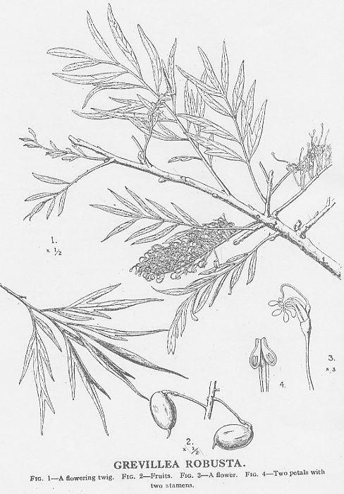
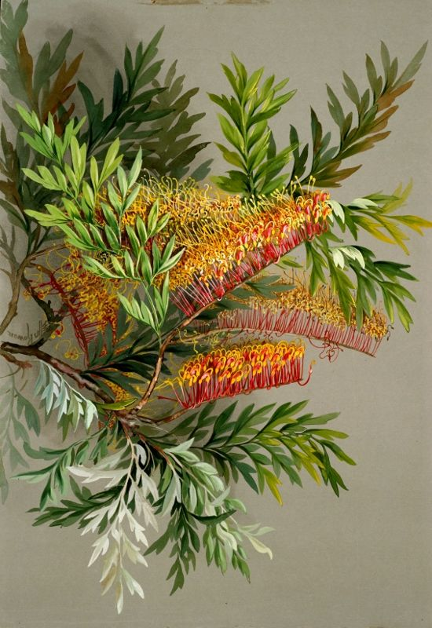
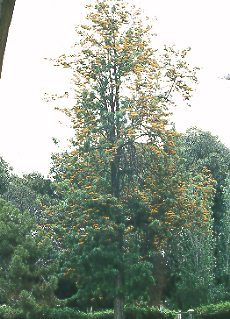

|
ECONOMICALLY
IMPORTANT PLANTS OF INDIA |
| Under-utilized Food and Fodder species and their wild relatives | Contributed by Ms.M.L Annapurna And Dr. Dhanapal, UAS, Bangalore |
Grevillea robusta

Taxonomic
Details
----- Correct Name
----- Classification
----- Synonyms
----- Common Names
Other Biological Details
----- Habit and Habitat
----- Diagnostic Features
----- Reproductive Biology
---------- Breeding System
---------- Phenology
---------- Pollinators
---------- Seed Biology
----------Seed Germination
------ Cultivation
----- Major Pests and Diseases
Economic Potential and Uses
----- Parts Used
-----Uses
----- Harvesting Practices
----- Produce and Products
----- Chemistry
----- Processing Techniques
----- Other uses
----- Economic Potential to the
Country
----- Export Potential
Miscellaneous Information
Literature
Correct
Name :
Grevillea robusta A. Cunn.

Family : Proteaceae
Synonyms :
Common Names :
English: Silky oak, Silver oak.
Back to Top
HABIT & HABITAT

Grevillea robusta
is a deciduous medium-sized to large tree 12-25 (max. 40) m tall; crown conical,
dense, with branches projecting upwards. Bole straight, branchless for up to 15
m, up to 80 (max. 120) cm in diameter, usually without buttresses; bark
fissured, sometimes pustulate, dark grey to dark brown, inner bark
reddish-brown. Grevillea robusta is native to subtropical coastal areas
of New South Wales and Queensland and has been successfully cultivated for shade
or timber in semiarid, temperate, and subtropical climates in India, Sri Lanka,
Kenya, Mauritius, Zambia, Malawi, Zimbabwe, Tanzania, Uganda, South Africa,
Hawaii, and Jamaica.
Availability :
Status :
DIAGNOSTIC
FEATURES
Grevillea robusta has an
attractive shape, long and beautiful, dense racemes of golden flowers, and
finely cut foliage. It is briefly deciduous in late winter-sometimes the new
leaves develop as the old ones fall. Its leaves are like big fern fronds, green
on the upper side, silver below. They are covered with silky gray hairs. Flowers
are orange red. Flowers showy, yellowish, numerous, paired, on long slender
stalks .
REPRODUCTIVE
BIOLOGY
Breeding System :
Propagated by seeds.
Phenology
:
Pollinators:
Seed Biology :
Seed Germination:
Silk oak is easily propagated from the great quantities of seeds it produces
(although the seed is difficult to collect because of the size of the trees)
from about 10 years of age. It regenerates naturally. Under normal storage
conditions, seeds remain viable for only a few months after collection, but
seeds dried and stored in a refrigerator are reported to keep well for 2 years.
Normal plantation cultivation is by transplanting nursery-grown seedlings after
they reach a height of about 0.6 m. Cuttings are also successful.
Moderate to fast growing. When climate and soil are suitable and weed competition is not severe, annual height and diameter increments of at least 2 m and 2 cm, respectively, are usually achieved for the 1st few years in row planting on farms. Annual height increments of 3 m have been observed at the most favourable sites. Grevillea robusta regrows well after complete defoliation following pruning and pollarding, which can be carried out repeatedly to yield wood and to regulate shading and competition with adjacent crops. It is characterized by root suckering, hence it is a good candidate for management under coppice rotation; it responds well to pollarding, lopping and pruning. A plant density of 800-1200 trees/ha is recommended for plantations. Some control of competing vegetation is required for the 1st 1-2 years after planting. Seedlings are normally planted at a spacing of 2.5-3 x 3-4 m. The relatively open canopy of G. robusta make it less suitable for areas with erosional hazard. It also easily regenerates naturally, especially in agricultural fields. For firewood production, rotations of 10-20 years are applied and annual volume increments of 5-15 cubic m/ha may be expected. A growth reduction after 20 years is reported. The species is known to produce substances toxic to its own seedlings.
MAJOR
PESTS & DISEASES
Pests:
Trees in
Diseases:
Several countries have reported dieback or growth reduction after about 20
years, particularly on dry sites.
Uses
Harvesting Practices
Produce and Products
Products
Apiculture: The golden flowers are attractive to bees, making it an important
honey plant.
Fuel: Grevillea robusta is popular for firewood and charcoal. It is also used to fuel locomotives and river steamers, power boilers and small industries. The calorific value of sapwood is about 4800 kcal/kg, while that of heartwood is 4950 kcal/kg.
Fibre: Mean fibre length is about 1.5 mm and width about 26 µm; the wood is suitable for pulping.
Timber: Grevillea yields a medium-weight hardwood with a density of 540-720 kg/cubic m at 15% moisture content. The timber has economic potential. Heartwood is pale pink-brown, turning to yellow-brown or red-brown on exposure; moderately clearly differentiated from the cream-coloured to pale pink sapwood; grain straight to wavy; texture medium to coarse and uneven; wood lustrous; prominent silver grain on radial surface.
Shrinkage
upon seasoning is low to moderate; seasoning properties are rated from good to
poor; wood air-dries slowly. It has a tendency to warp and check; therefore,
thick material should be air-dried slowly followed by a mild kiln schedule to
avoid honeycombing. The wood is hard, of low strength, but elastic, can be
peeled and sliced satisfactorily, is moderately durable to non-durable and shows
an absorption of creosote of 128 kg/cubic m when treated by open-tank method and
321 kg/cubic m with pressure treatment. The wood is susceptible to marine borer,
pinhole borer and termite attack. It is easy to work with hand and machine
tools, but cutting at an angle of 10 degrees is required to obtain a good finish
on quarter-sawn faces. The wood is used in making railroad ties, plywood,
panelling, air-freight cases and furniture, parquetry, turnery, boat building,
interior trim, cabinet work, parquet flooring, boxes, toys and novelties.
2.Beautification:
Because of its height, good form, and attractive flowers, it is often planted as
a street tree.
3.Honey:The
golden flowers are attractive to bees, making this an important honey plant.
4.Shade:
It has been used to provide light shade over coffee and tea plantations. The
wood is tough, elastic, and moderately dense (specific gravity, 0.57). It is
used for fuel in
5.Shade
or shelter: Can be grown as a shade tree in coffee and tea plantations. Its
spreading branching system makes it ideal for windbreaks or shelterbelts against
wind-induced mechanical damage, high rates of transpiration and surface
evaporation.
6.Reclamation:
Grevillea robusta is a pioneering colonizer of disturbed sites.
7.Soil
improver: Grevillea robusta provides abundant quantities of leaf mulch,
which may accumulate to a depth of 30-40 cm. This thick layer protects the soil
and maintains soil temperature. The leaves and twigs are apparently rich in
aluminium.
8.Ornamental:
Its majestic height, attractive shape and beautiful foliage make G. robusta an
ideal tree for landscaping of private and public gardens. The cut leaves are
used in flower arrangements, and young plants are grown as indoor pot plants in
9.Intercropping:
A deep rooting system causes little interference with shallow-rooted crops, and
it can be successfully intercropped with banana, tomato and other agricultural
crops.
Environmental Requirements
Temperature: The plant prefers warm, temperate to subtropical temperatures,
generally with mean annual temperatures of about 20°C Mature trees can
withstand occasional light frost (-10°C), but young plants are frost sensitive.
Altitude: It grows at a wide range of altitudes, from sea level to above 2,300
m.
Rainfall: Annual rainfall in its natural habitat is from 700 to over 1,500 mm,
most of which falls during the summer;however,the species has been introduced in
many areas with annual rainfall of only 400-600 mm, with 6-8 dry months. In
addition, it also grows in areas having as much as 2,500 mm of rainfall
annually.
Soil: The tree grows well in many types of soil, including sandy soils, loams of
medium fertility, and acid soils. As it tends to be a deep-rooted species, deep
soils are generally preferred. It does not tolerate waterlogging.


.jpg){kind=link}
.jpg){kind=link}